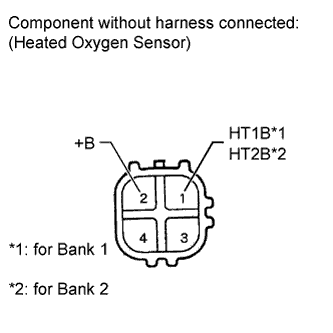

HEATED OXYGEN SENSOR > INSPECTION |
| 1. INSPECT HEATED OXYGEN SENSOR |
 |
Measure the resistance according to the value(s) in the table below.
| Tester Connection | Condition | Specified Condition |
| 1 (HT1B) - 2 (+B) for Bank 1 | 20°C (68°F) | 11 to 16 Ω |
| 1 (HT2B) - 2 (+B) for Bank 2 | 20°C (68°F) | 11 to 16 Ω |